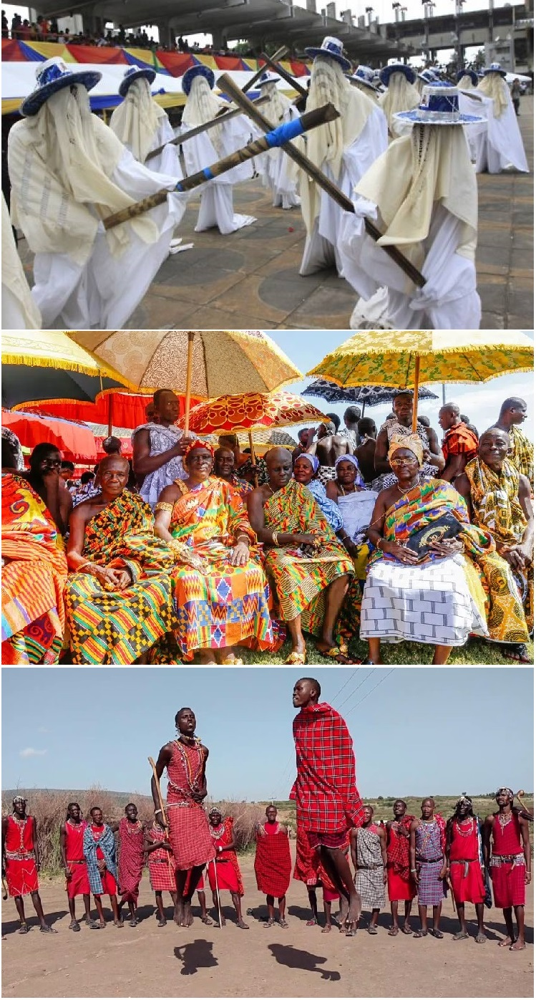
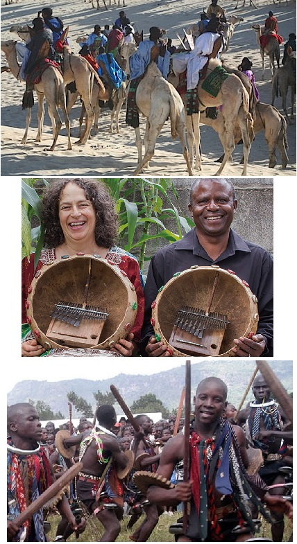

Continentul african este renumit pentru diversitatea sa culturală, cu tradiții și obiceiuri care reflectă o moștenire bogată și variată. Aceste tradiții sunt adânc înrădăcinate în viața de zi cu zi a comunităților africane și sunt păstrate și transmise cu grijă de la o generație la alta.

În Nigeria, una dintre cele mai semnificative tradiții este festivalul „Eyo” din Lagos, considerat a fi predecesorul carnavalului
modern din Brazilia. Festivalul este un eveniment cultural și religios care onorează spiritele strămoșilor și este marcat de parade
spectaculoase în care participanții, cunoscuți ca Eyo, poartă costume albe și pălării mari, dansând și cântând pe străzile orașului.
În Ghana, tradiția „Adae Kese” este un festival important al poporului Ashanti. Această celebrare, care are loc de două ori pe an, este
dedicată venerării strămoșilor și zeilor. Festivalul include ceremonii elaborate, dansuri, cântări și sacrificii, oferind o oportunitate
pentru comunitate de a se reuni și de a-și reafirma legăturile culturale și spirituale.
În Kenya, tribul Maasai este cunoscut pentru tradițiile sale unice, cum ar fi dansul săriturii (Adumu). Acesta este un dans ritualic efectuat
de tinerii războinici Maasai, care sar în sus într-o competiție prietenoasă pentru a-și demonstra puterea și agilitatea. Dansul săriturii
este adesea prezentat în timpul ceremoniilor de inițiere și alte evenimente comunitare importante.


În Etiopia, festivalul „Timkat” este o sărbătoare religioasă ortodoxă care comemorează botezul lui Iisus în râul Iordan.
Timkat este marcat de procesiuni grandioase, ceremonii de binecuvântare a apei și reconstituiri ale botezului, atrăgând
mii de credincioși și turiști. Festivalul subliniază importanța spiritualității și a credinței în viața etiopienilor.
În Africa de Sud, tradiția „Zulu Reed Dance” (Umhlanga) este o ceremonie culturală anuală a poporului Zulu, unde mii de fete
tinere participă la o procesiune și dansează în fața regelui Zulu. Scopul ceremoniei este de a celebra virginitatea și puritatea
fetelor, promovând valori de respect și moralitate în cadrul comunității Zulu.
În Maroc, tradiția „Fantasia” sau „Tbourida” este o demonstrație de echitație care recreează atacuri militare tradiționale
ale triburilor berbere. Aceasta implică călăreți îmbrăcați în costume tradiționale care mânuiesc săbii și execută acrobații
impresionante pe cai. Fantasia este o manifestare a mândriei culturale și a abilităților de călărie, fiind adesea prezentată
în cadrul festivalurilor locale.
În Senegal, tradiția „Laamb” sau luptele senegaleze sunt foarte populare și reprezintă o combinație de sport și ritual. Luptele
sunt însoțite de muzică tradițională și dansuri, iar câștigătorii sunt considerați eroi locali. Laamb este mai mult decât un sport;
este o expresie a culturii și identității senegaleze, fiind adânc înrădăcinat în istoria și valorile comunității.
În Mali, festivalul „Festivalul de la Désert” în Timbuktu este o celebrare a culturii nomade tuarege. Festivalul include muzică
tradițională, dansuri, curse de cămile și poezie, atrăgând artiști și vizitatori din întreaga lume. Este o oportunitate de a promova
pacea și înțelegerea între diferite culturi, subliniind bogăția patrimoniului cultural din Mali.
În Zimbabwe, tradiția „Mbira” este esențială pentru cultura Shona. Mbira este un instrument muzical tradițional, cunoscut și ca pianul
cu degete, și este folosit în ceremonii religioase, vindecare și evenimente sociale. Muzica mbira este considerată a avea puteri spirituale,
conectând oamenii cu strămoșii lor și cu forțele naturii.
În Uganda, ceremonia „Imbalu” este o tradiție de inițiere a tinerilor băieți în bărbați, practicată de poporul Bagisu. Imbalu include
circumcizia și este însoțită de dansuri, cântece și festivități comunitare. Aceasta ceremonie simbolizează maturitatea, curajul și apartenența
la comunitate, fiind o parte fundamentală a identității Bagisu.

Aceste tradiții și obiceiuri din Africa sunt o reflectare a diversității culturale și spirituale a continentului. Ele joacă un rol crucial în menținerea identității și coeziunii comunităților, oferind o legătură vitală cu trecutul și un ghid pentru viitor. Tradițiile africane sunt o celebrare a vieții, a naturii și a umanității, demonstrând bogăția și profunzimea moștenirii culturale a continentului.